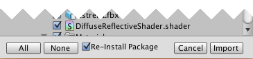
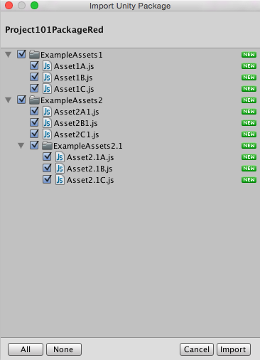
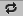
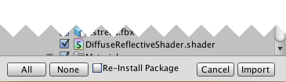
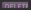
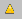

Upgrading Packages
Unity Standard Assets, Asset Store downloads and assets in Custom Packages are all imported into projects via Asset packages. See Packages for details, including how to import and export Asset packages, as well as export updated Asset packages.
Often packages are updated by their makers; adding new files, removing files, or changing existing files. If you have already installed a package, you may want to upgrade your version to match a newer version.
When you import a package, Unity checks whether this is a newer version of an existing package, containing newer asset files (a re-install / upgrade) or a completely new package. If Unity detects the package is an upgrade, it gives you a Re-install option along with checkbox options of which asset files you want to re-install. These are detailed below in Re-install Situations.
Warning: Re-installing deletes files!
When using the "re-install" option, Unity will delete all existing files associated with the package.
The way Unity determines which files will be deleted is by looking at the folders used for assets contained in the new package.
Any existing folders in your project which match folders in the new package will have their contents deleted. There are possible undesired consequences to this if you use this option without carefully looking at what will be deleted.
If your package has an asset in a folder called "MyPackage", eg.
/Assets/MyPackage/Foo.fbx, all assets in the MyPackage folder will be deleted and replaced with just the files from the new package.If you have added your own new files to an existing package folder, Unity will not differentiate between the genuine "old" package files, and files you may have subsequently added yourself. They will all be deleted.
If the package you are re-installing contains assets in a folder shared by multiple packages, such as assets in
StreamingAssets/orResources/, Unity will not differentiate between the genuine "old" package files and files from other packages which put stuff in this same folder. They will be deleted.As a logical conclusion to these rules, if the package you are re-installing has assets in the root
Assets/folder, and you have the "re-install" option enabled, all the assets in your project will be deleted and replaced with the package contents. You probably don't want this, and should disable the "re-install" option to avoid this outcome.
Use this option carefully!
When using the re-install option you should note that:
The Re-install checkbox is pre-selected.
Files to re-install are pre-selected.
If you leave the selections as they are, and click on Import, Unity deletes the existing, pre-selected files and installs new ones.
This functionality ensures projects importing updated packages, particularly those from the Asset Store and Standard Assets which can be regularly updated, don't keep unused files in your project, such as duplicate files or old files that have been removed from the package. However, it also means that it is easy to accidentally delete assets that you want to keep.
If you are not sure about which asset files you want to re-install, you are strongly advised to back up any asset files away from the project's Asset folder, via your computer's Finder (Mac) or File Finder (Windows) before re-installing/upgrading packages.

Moving an Asset File or Package Folder
If you move an element of a package (that is the package folder itself or a package's asset file) around inside the package's parent folder, Unity can locate the moved element and offer re-install options. However, any elements of a package which you move outside the asset package's parent folder, Unity no longer recognises as part of a package and assumes a new install.
Import and Re-install/Upgrade Options
Below are some example situations.
Initial Import
For a brand new package, never imported before, in the Import Package dialog box:
All folders are expanded and checked by default.
Each asset (including folders) is marked as NEW.
There is no Re-install option.

Changed Asset File Update
If a file has changed in the package, Unity displays the CHANGED icon against it. For example:
MyExamplePackage1 has an update to its asset ExampleAssetA. All the other assets are exactly the same as in the previous version of MyExamplePackage1; there is no change to their files.
In the Import Package dialog box:
ExampleAssetA is marked as CHANGED. 
- There is a Re-install option. This is selected by default.
[1] With the Re-install option selected (default):
You can choose the unchanged asset files to update. (Selected to re-install is the default.)
You can choose the updated asset file to re-install. (Selected to re-install is the default.)
[2] With the Re-install option UNselected:
You cannot choose the unchanged asset files to re-install. They are greyed out.
You can choose or unselect the updated asset file to re-install. (Selected to re-install is the default.)

New Asset File Update
If a file is new in the package, Unity displays the NEW icon against it. For example:
MyExamplePackage1 has a new asset file; ExampleAssetB. All the other assets are exactly the same as in the previous version of MyExamplePackage1; there is no change to their files.
In the Import Package dialog box:
ExampleAssetB is marked as NEW.
There is a Re-install option. This is selected by default. If you leave the Re-install option selected, you have the option to re-install unchanged files, as described in Changed Asset File Update, above.
The new file's install is unaffected by the Re-install option.
Deleted Asset File Update
If a file has been deleted in the package, Unity displays the DELETED icon against it. For example:
MyExamplePackage1 has been updated; ExampleAssetA has been removed. All the other assets are exactly the same as in the previous version of MyExamplePackage1; there is no change to their files.
In the Import Package dialog box:
ExampleAssetA is marked as DELETED. 
There is a Re-install option. This is selected by default. If you leave the Re-install option selected, you have the choice to re-install unchanged files, as described in Changed Asset File Update, above.
Options:
[A] To delete ExampleAssetA in your project, leave the __Re-install__ option selected.
[B] To keep ExampleAssetA in your project, DE-select the __Re-install__ option.
Replacement Files & Packages
Files
Each package folder, sub-folder, and asset file in a package has a unique identifier (a GUID). If a package's maker deletes an asset file in a version of their package, then, in a later version, replaces it with a file of the same name but uses an entirely new file as the replacement, the new file has a different GUID to the original. In this case, Unity detects that the there is different file with a name conflict and displays a warning. Here is an example:
ExampleAssetD has been removed from the package and later replaced with a different file.
In the Import Package dialog box:
ExampleAssetD is marked as CHANGED.
ExampleAssetD is also marked with a WARNING. 
This warning is important: the replacement file may break links between the package and your project.
Packages
Each package folder, sub-folder, and asset file in a package has a unique identifier (a GUID). If you install a different package with the same name as an existing one, the new package folder has a different GUID to the original. In this case, Unity detects that the there is different package with a name conflict and displays a warning. Unity assumes that the contents of the new package is replacing the existing package and handles it as a re-install. Here is an example:
ExamplePackage1 is a new import; is a completely different package to ExamplePackage1 already installed. It has files; NewFile1, NewFile2. The existing ExamplePackage1 had two existing files; ExistingFile1, ExistingFile2.
In the Import Package dialog box:
ExamplePackage1 folder is marked as CHANGED.
ExamplePackage1 folder is also marked with a WARNING.
NewFile1 and NewFile2 files are marked as NEW.
ExistingFile1 and ExistingFile2 are marked as DELETED.
Note on the warning: While, in this circumstance, the replacement folder may not break links in your project, take care to select the files you want for import and deletion.